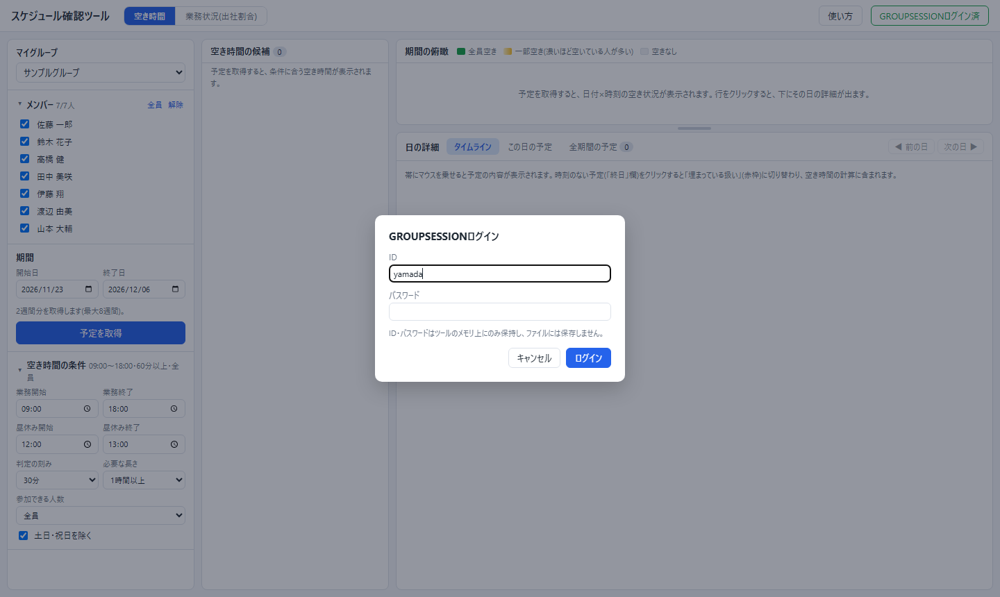
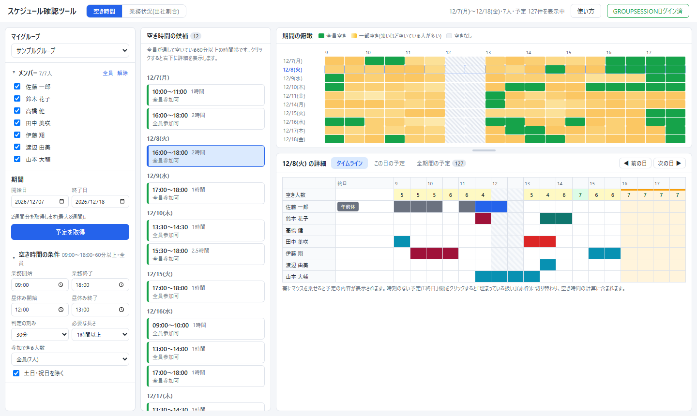
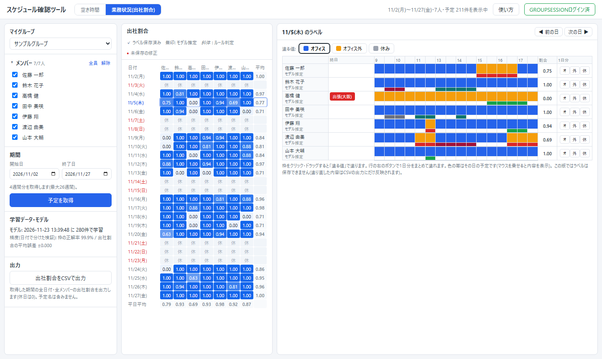

スケジュール確認ツールの使い方
GROUPSESSION のマイグループのメンバーの予定をまとめて取得し、全員が空いている時間や、日ごとの出社割合を確認できます。
1. はじめに・起動
- GROUPSESSION の予定は変更しません。予定を読み込んで表示するだけです。
- 取得した予定は画面に表示するだけで、ファイルには保存しません。ID・パスワードも保存しません。
- 配布されたフォルダの schedule_tool.exe をダブルクリックします。
- 黒いコンソール画面が開き、続けてブラウザでツールの画面が開きます。
ブラウザが開かない場合は、アドレス欄に
http://localhost:8000と入力してください。 - 終了するときは、コンソール画面を閉じます(使っている間は閉じないでください)。
フォルダの中身は次のとおりです。data フォルダには出社割合の判定に使うファイルが入っています。消したり移動したりしないでください。
schedule_tool/ ├── schedule_tool.exe ... ツール本体 ├── config.json ... 設定(初めて起動したときに作られます) ├── data/ ... 出社割合の判定に使うファイル └── _internal/ ... ツールの動作に必要なファイル
2. ログインと対象の選び方

- ログイン:GROUPSESSION の ID・パスワードを入力して ログイン を押します。 ログイン画面を閉じてしまった場合は、右上の GROUPSESSIONログイン から開けます。
- マイグループ:左上のプルダウンから選ぶと、所属するメンバーが表示されます。 マイグループは GROUPSESSION のスケジュール画面で作成・編集してください。
- メンバー:予定を確認したい人にチェックを入れます(全員 解除 でまとめて切り替えられます)。
- 期間:開始日・終了日を指定して 予定を取得 を押します。1週間ずつ読み込むため、期間が長いと少し時間がかかります。
次に起動したときは、前回選んだマイグループとメンバーが自動で選ばれます。
画面上部の 空き時間 / 業務状況(出社割合) で、2つの画面を切り替えます。
3. 空き時間を探す
画面上部で 空き時間 を選びます。期間は一度に8週間まで取得できます(初期値は今日から2週間)。

候補の見方
- 空き時間の候補(中央):条件に合う時間帯の一覧です。クリックすると、右下にその日の詳細が表示されます。
- 期間の俯瞰(右上):1日を1行として、時刻ごとの空き状況を色で表します。 全員空き、 一部空き(濃いほど空いている人が多い)、 空きなし。 マスにマウスを乗せると、空いていない人が表示されます。行をクリックすると、その日の詳細が表示されます。
- 日の詳細(右下):メンバーごとの予定を色の帯で表示します。帯にマウスを乗せると予定の内容が出ます。 この日の予定 全期間の予定 のタブでは一覧で確認できます。 ◀ 前の日 次の日 ▶(またはキーボードの ← →)で日を移動できます。
- 右上と右下の間の仕切りを上下にドラッグすると、高さを変えられます(ダブルクリックで元に戻ります)。
空き時間の条件
左の「空き時間の条件」を変えると、取得し直さなくてもすぐに結果が変わります。
| 項目 | 初期値 | 説明 |
|---|---|---|
| 業務開始・業務終了 | 9:00〜18:00 | この時間内で空き時間を探します |
| 昼休み | 12:00〜13:00 | この時間は候補に含めません |
| 判定の刻み | 30分 | この単位で空いているかを判定します |
| 必要な長さ | 1時間以上 | これより短い空き時間は候補に出しません |
| 参加できる人数 | 全員 | 「◯人以上」にすると、全員がそろわない場合の次善の候補を探せます |
| 土日・祝日を除く | オン | 土日と祝日を候補から除きます |
時刻のない予定の扱い
時刻のない予定(締め切りのメモなど)は、初期状態では空き時間の計算に含めません。 出張など、その日は実際に埋まっている場合は、日の詳細の「終日」欄の予定をクリックしてください。 赤枠になり、その人はその日終日埋まっているものとして計算されます(もう一度クリックで元に戻ります。この切り替えは保存されません)。
4. 出社割合を見る・出力する
画面上部で 業務状況(出社割合) を選び、期間を指定して 予定を取得 を押します。期間は一度に26週間まで取得できます。

出社割合とは
1日の勤務時間(9:00〜18:00 から昼休みを除いた8時間)を30分ごとの16枠に分け、枠ごとに オフィス、 オフィス外、 休み を判定します。 出社割合 = オフィスの枠の数 ÷ 16 です(1日オフィスなら 1、半休なら 0.5、休暇・土日・祝日は 0)。
判定は、GROUPSESSION の予定(予定名・時刻)をもとに、学習済みのモデルが自動で行います。
表の見方
- 中央の表の数値が出社割合です。青が濃いほど出社割合が高いことを表します。土日と祝日は「休」です。
- 一番下の行は、メンバーごとの平日の平均、右端の列はその日の全員の平均です。
- 行をクリックすると、右側にその日の30分ごとの判定が表示されます。枠の下の細い色の帯はその時間の予定です(マウスを乗せると予定名が出ます)。
判定を直す
判定が実際と違う場合は、右側の表で直せます。上の「塗る値」を選んで、枠をクリック・ドラッグすると塗り直せます。 1日まるごとの場合は、行の右の オ 外 休 ボタンが便利です。
CSVで出力する
左の 出社割合をCSVで出力 を押すと、取得した期間のすべての日付・メンバーの出社割合をCSVファイルでダウンロードします(予定名は含みません)。
date,佐藤,鈴木,高橋,田中,伊藤,渡辺,山本 2026/11/02,0.9375,1,1,0.875,1,1,1 2026/11/03,0,0,0,0,0,0,0 2026/11/04,1,0.8125,1,1,1,1,1 …
- 1行目は
dateとメンバーの苗字です(同じ苗字の人がいる場合は、その人たちだけ氏名になります)。 - 日付は
yyyy/mm/ddの形で、期間内の日付が抜けなく並びます。土日・祝日は 0 です。 - Excel でそのまま開けます。
5. 困ったとき
| 症状 | 原因・対処 |
|---|---|
| 「IDまたはパスワードが正しくありません」と表示される | GROUPSESSION に実際にログインできる ID・パスワードを入力してください。 |
| 途中でログイン画面が開く | GROUPSESSION のログインが切れました。ログインし直してから、もう一度操作してください。 |
| 「GROUPSESSIONへのアクセスに失敗しました」と表示される | 社内ネットワークに接続しているか、ブラウザで GROUPSESSION が開けるかを確認してください。 |
| マイグループが表示されない | GROUPSESSION のスケジュール画面でマイグループを作成してから、ツールを開き直してください。 |
| 「ポート 8000 はすでに使われています」と表示される | ツールがすでに起動しています。開いているコンソール画面やブラウザのタブを確認してください。 |
| 「一度に取得できる期間は◯週間までです」と表示される | 期間を短くして、何回かに分けて取得してください(空き時間は8週間、業務状況は26週間まで)。 |
| 出社割合の画面で「モデル: 未学習(ルールで判定中)」と表示される | data フォルダに判定用のファイル(office_model.joblib)がありません。配布した担当者に問い合わせてください。 |
| 画面の表示がおかしい | ブラウザで Ctrl + F5 を押して再読み込みしてください。 |